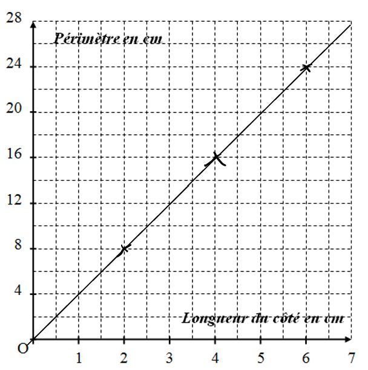
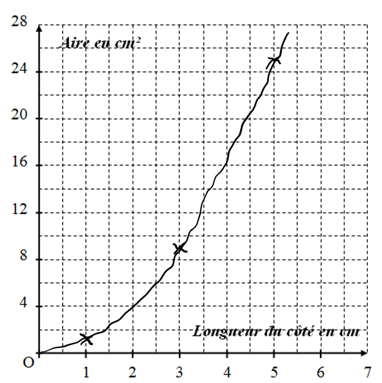

Définition : Deux grandeurs sont proportionnelles lorsque l'une s'obtient en multipliant (ou en divisant) l'autre par un même nombre non nul appelé coefficient de proportionnalité.
Exemple 1 :
Côté d'un carré (cm)
2
4
6
Périmètre du carré (cm)
8
16
24
× 4
On a : 82 = 4 ; 164 = 4 ; 246 = 4
Les quotients sont égaux. Ce nombre est le coefficient de proportionnalité.
Dans ce cas les deux grandeurs sont proportionnelles.
Exemple 2 (contre-exemple) :
Côté d'un carré (cm)
1
3
5
Aire du carré (cm²)
1
9
25
On a : 11 = 1 ; 93 = 3
Les quotients ne sont pas égaux.
Dans ce cas les deux grandeurs ne sont pas proportionnelles.
Représentation graphique de l'exemple 1 :

Représentation graphique de l'exemple 2 :

Sur un graphique, une situation de proportionnalité est représentée par une droite passant par l'origine.
I. Situation de proportionnalité
2) Compléter un tableau de proportionnalité
Exemple : Paul achète 3 kg de pommes pour 6,9 €. Compléter le tableau suivant :
Quantité de pommes (Kg)
3
4
7
15
Prix (en €)
6,9
?
?
?
a) En utilisant le coefficient de proportionnalité
Quantité de pommes (Kg)
3
4
Prix (en €)
6,9
?9,2
× 2,3
6,93 = 2,3
Le coefficient de proportionnalité est 2,3.
Donc : 4 × 2,3 = 9,2
b) En additionnant ou en soustrayant deux colonnes du tableau
Dans un tableau de proportionnalité on peut additionner ou soustraire deux colonnes :
Quantité de pommes (Kg)
3
4
?7
Prix (en €)
6,9
9,2
?16,1
3 kg + 4 kg = 7 kg, et 6,9 € + 9,2 € = 16,1 €
c) En multipliant ou en divisant une colonne par un nombre non nul
Quantité de pommes (Kg)
3
15
Prix (en €)
6,9
?34,5
153 = 5
Ainsi on passe de la première colonne à la deuxième colonne en multipliant par 5.
Donc : 6,9 × 5 = 34,5
II. Exemples d'utilisations de la proportionnalité
1) Les pourcentages
Propriété : Appliquer x % à un nombre, c'est multiplier ce nombre par x100.
a) Appliquer un pourcentage :
Exemple : Dans un collège de 400 élèves, 15 % des élèves jouent au volley. Combien d'élèves jouent au volley ?
400 × 15100 = 400 × 0,15 = 60
Il y a 60 élèves qui jouent au volley dans ce collège.
Ou bien :
Nombre d'élèves
100
400
Nombre d'élèves qui jouent au volley
15
60
b) Calculer un pourcentage :
Exemple : Dans une classe de 30 élèves il y a 9 filles. Quel est le pourcentage de filles dans cette classe ?
Cela revient à déterminer le nombre de filles qu'il y aurait si la classe était composée de 100 élèves.
Nombre d'élèves
30
100
Nombre de filles
9
30
930 = 0,3
Le coefficient de proportionnalité est 0,3.
Dans cette classe, il y a 30 % de filles.
II. Exemples d'utilisations de la proportionnalité
2) Échelles
Définition : Sur une représentation à l'échelle, les mesures sur la représentation sont proportionnelles aux mesures réelles. L'échelle est le coefficient de proportionnalité.
Remarque importante : Les mesures sont exprimées dans la même unité.
a) Utilisation d'une échelle :
Exemple : Sur une carte à l'échelle 150 000, deux villes sont distantes de 12 cm. Quelle est la distance réelle entre ces deux villes ?
Distance sur la carte en cm
1
12
Distance réelle en cm
50 000
600 000
50 0001 = 50 000
Le coefficient de proportionnalité est 50 000.
La distance réelle est de 600 000 cm soit 6 km.
b) Calculer une échelle :
Exemple : Calculer l'échelle de ce dessin :
Sur ce dessin, on mesure la longueur de la flèche, elle mesure 4 cm.
On cherche combien 1 cm sur le dessin va représenter en réalité.
Distance sur le dessin en cm
4
1
Distance réelle en cm
36
9
364 = 9
Le coefficient de proportionnalité est 9.
L'échelle est 19.
Remarque : Calculer une échelle revient à calculer le coefficient de proportionnalité : distance sur la cartedistance réelle, ces distances étant dans la même unité.
III. Ratio
Un ratio est une façon d'indiquer une proportion entre plusieurs quantités. Par exemple, le ratio 3 : 2 : 5 signifie que pour 3 parts du premier élément, on prend 2 parts du second et 5 parts du troisième.
Propriété :
On dit que deux nombres a et b sont dans le ratio 2 : 3 si a2 = b3
On dit que trois nombres a, b et c sont dans le ratio 2 : 3 : 7 si a2 = b3 = c7
Remarque : Dans la pratique, pour deux nombres, on dit que deux nombres a et b sont dans le ratio 2 : 3 si ab = 23.
On retrouve ainsi la notion de proportionnalité entre les nombres a et b.
Exemple : Partager 100 € entre trois personnes selon le ratio 3 : 2 : 5.
 Sur ce dessin, on mesure la longueur de la flèche, elle mesure 4 cm.
On cherche combien 1 cm sur le dessin va représenter en réalité.
Sur ce dessin, on mesure la longueur de la flèche, elle mesure 4 cm.
On cherche combien 1 cm sur le dessin va représenter en réalité.